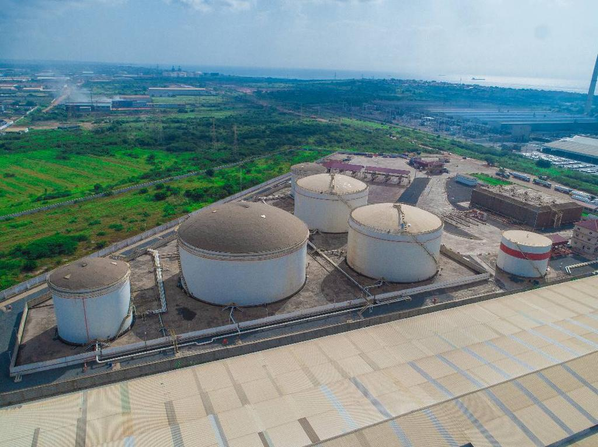
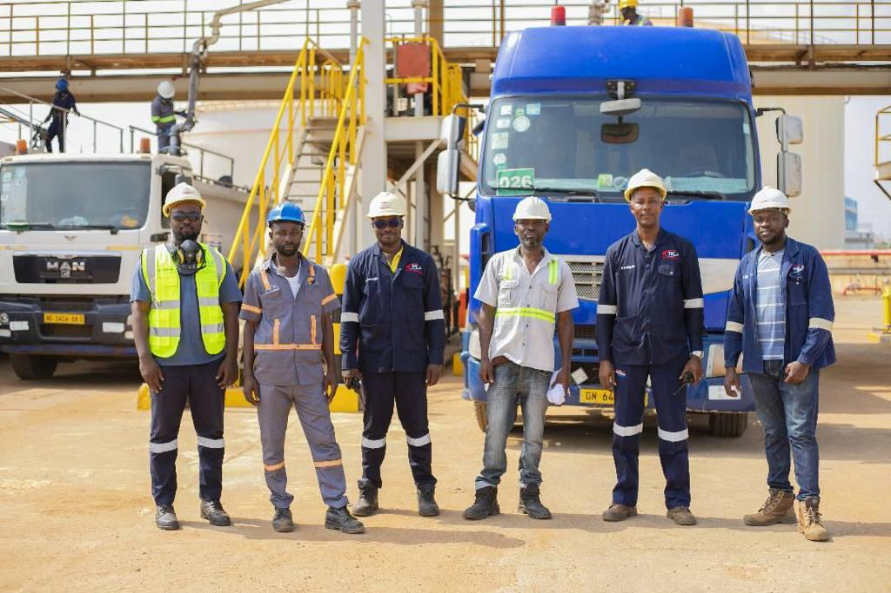

STORAGE SERVICES
TFC stores three (3) categories of product. Gas Oil, Gasoline and Liquified Petroleum Gas (LPG) with total storage capacity of 84,000 MT.
Certified to meet international standards, our storage tanks are equipped with world-class monitoring systems for seamless operation.
LOADING RACK
Our Gantry facility guarantees rapid turnaround times for our clients due to our automated loading system. With the capacity to load on average 200 trucks within 8hours, our spacious loading gantry ensures accuracy in product delivery always.
The facility has:
Six (6) Bay Gasoline Gantry with Six (6) Loading arms
•Four (4) Bay Gasoil Gantry with Four (4) Loading arms
•Three (3) Bay LPG Gantry with Four (4) Loading arms
•Automated Terminal management System (TMS), which handles the loading operations
